Scaling rates of True Polar Wander
Ian Rose
May 5, 2016
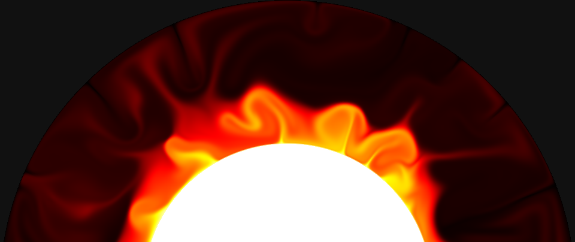
$\require{cancel} \definecolor{green}{RGB}{141,211,199} \definecolor{yellow}{RGB}{255,255,179} \definecolor{purple}{RGB}{190,186,248} \definecolor{red}{RGB}{251,128,114} \definecolor{blue}{RGB}{128,177,211} \definecolor{orange}{RGB}{253,180,98}$
Conservation of angular momentum
\begin{equation}\begin{aligned}
\frac{\partial H}{\partial t} + \Omega \times H &= 0 \\
\Omega \times H &= 0 \\
\Omega(t) \times (\mathrm{I}(t) \cdot \Omega(t) ) &= 0 \\
\end{aligned}\end{equation}
Modern true polar wander
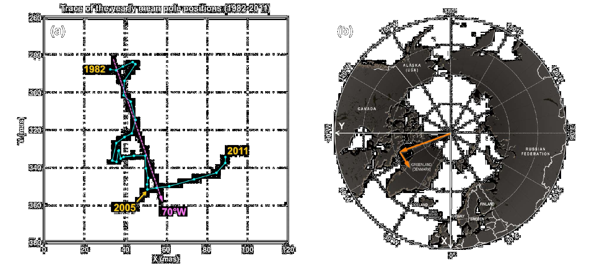
Chen et al, 2013
Ancient true polar wander?
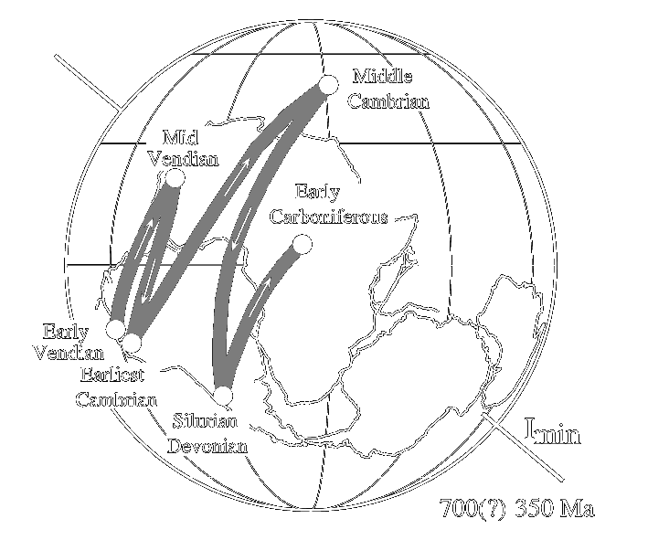
Evans, 2003
How stable should Earth be?
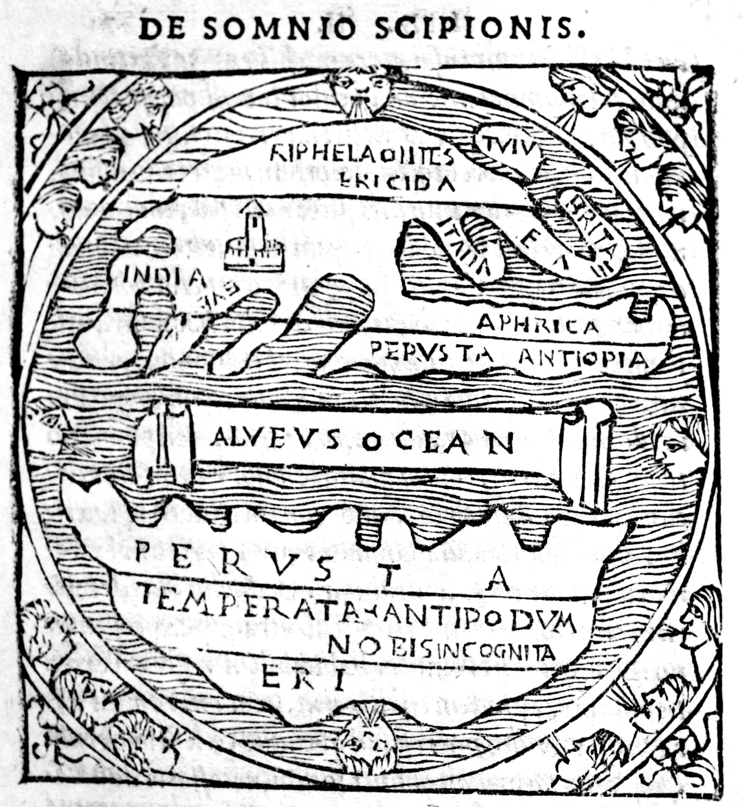
Macrobius Ambrosius Theodosius (circa 400 C.E.)
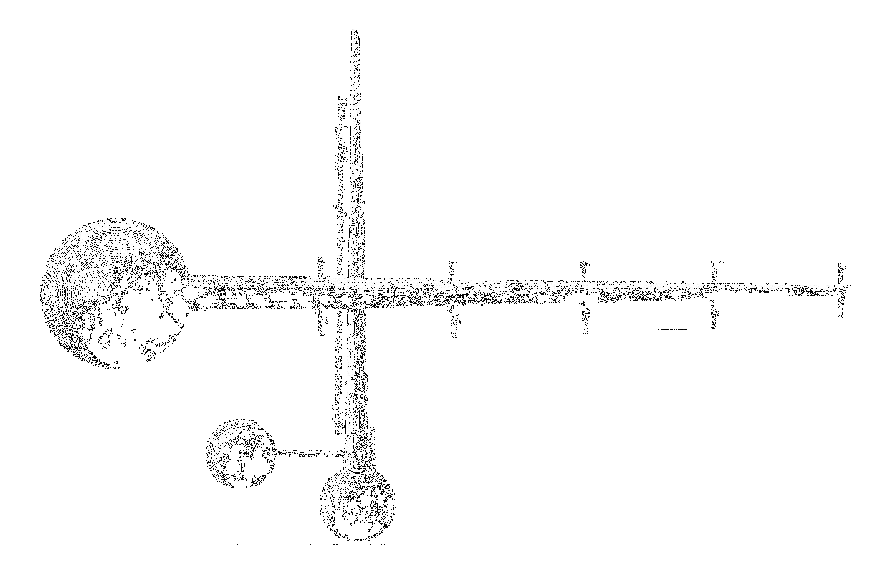
Athanasius Kircher (1679)
"The absurd results are... that the motion of the earthly globe
from its center would bring the total ruin of nature below"
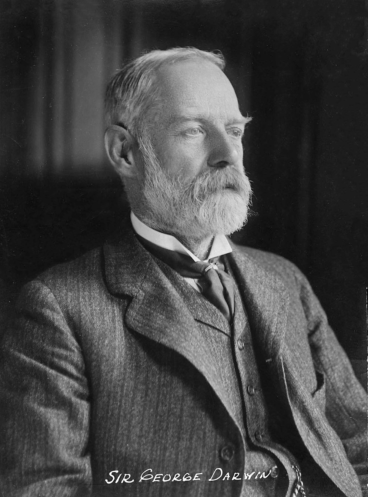
George Darwin (1887)
"If the earth were a viscous fluid there is no doubt but that the pole of the figure
would tend to displace itself towards the instantaneous axis..."
after Goldreich and Toomre (1969)
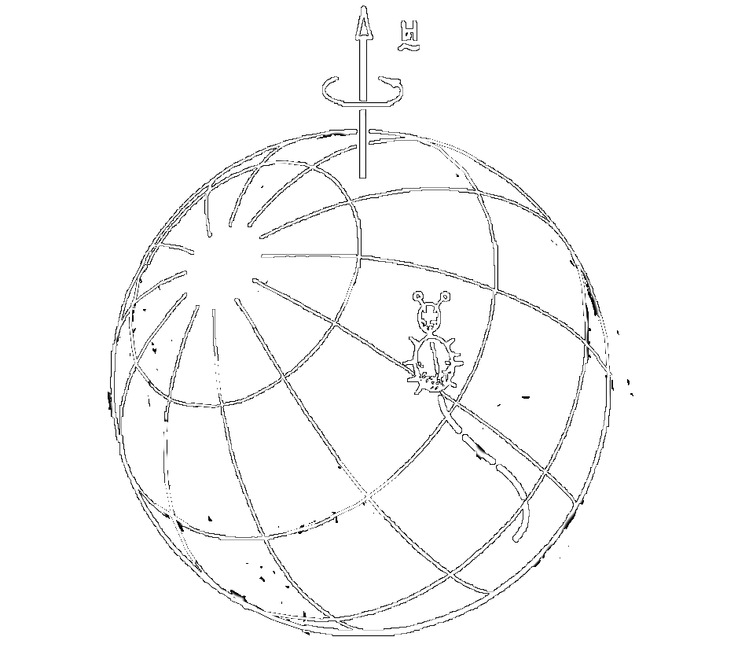
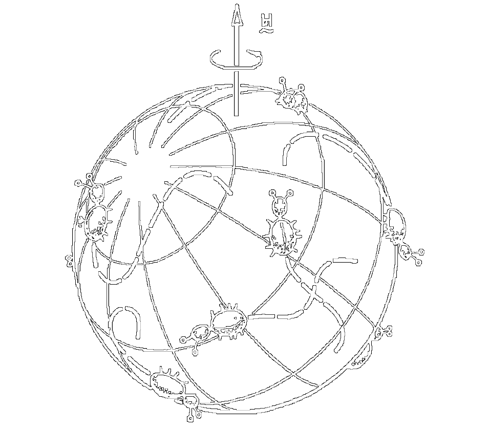
TPW demonstration part two
How does the rate of TPW scale with the physical parameters of a convecting planet?
How many beetles are there on Earth, and how big are they?
Convective generation of mass anomalies depends on
- density
- gravity
- temperature
- radius
- thermal expansivity
- viscosity
- ...
TPW response to mass anomalies depends on
- density
- rotation rate
- gravity
- radius
- viscosity
Governing equations
$\underbrace{-\nabla P}_{\mathrm{pressure}} + \underbrace{\eta \nabla^2 \mathbf{u}}_{\mathrm{viscosity}} = \underbrace{\rho \mathbf{g}}_{\mathrm{gravity}} - \underbrace{\rho \Omega \times \Omega \times \mathbf{r}}_\mathrm{centrifugal}$
$\nabla \cdot \mathbf{u} = 0$
$\rho = \rho_0 ( 1 - \alpha (T - T_0) )$
$\frac{\partial T}{\partial t} = -\mathbf{u} \cdot \nabla T + \kappa \nabla^2 T$
Nondimensionalization
$\mathrm{Ra} = \frac{\rho_0 g \alpha \Delta T R^3}{\eta \kappa} = \frac{ \mathrm{buoyancy} }{\mathrm{diffusion}}$
$m = \frac{\Omega^2 R}{g} = \frac{\mathrm{centrifugal}}{\mathrm{gravity}}$
$\Gamma = \alpha \Delta T = \frac{\mathrm{density \; variations}}{\mathrm{density}}$
Rate of true polar wander
$ \dot{\Theta} = \frac{1}{{\color{red}\tau}} \frac{\color{blue}(\lambda_3-\lambda_1)}{\color{yellow}(C-A) } \sin(2 {\color{purple}\theta})$
$\color{red}\tau$: viscous relaxation time
$\color{yellow}(C-A)$: Difference of polar and equatorial moments of inertia
$\color{blue}(\lambda_3-\lambda_1)$: Difference of principal convective moments
$\color{purple}\theta$: Angle between the rotation axis and the principal convective axis
$ \dot{\Theta} = \frac{1}{\color{red}\tau} \frac{(\lambda_3-\lambda_1)}{(C-A) } \sin(2 {\theta})$
Scaling $\color{red}\tau$:
$\color{red}\tau$ is a viscous relaxation time for rotational deformation of the planet
${\color{red}\tau} \sim \frac{\eta}{\rho_0 g R} = \frac{R^2}{\kappa} \frac{\Gamma}{\mathrm{Ra}}$
$ \dot{\Theta} = \frac{1}{\tau} \frac{(\lambda_3-\lambda_1)}{\color{yellow}(C-A) } \sin(2 {\theta})$
Scaling $\color{yellow}(C-A)$:
${\color{yellow}(C-A)} \sim \frac{\Omega^2 R I_0}{g} = m I_0$
$ \dot{\Theta} = \frac{1}{\tau} \frac{\color{blue}(\lambda_3-\lambda_1)}{(C-A) } \sin(2 {\theta})$
Scaling $\color{blue}(\lambda_3-\lambda_1)$:
${\color{blue}(\lambda_3-\lambda_1)} \sim \alpha \Delta T I_0 T_{\mathrm{degree\;two}} = \Gamma I_0 T_{\mathrm{degree\;two}}$
$ \dot{\Theta} = \frac{1}{\tau} \frac{\color{blue}(\lambda_3-\lambda_1)}{(C-A) } \sin(2 {\theta})$
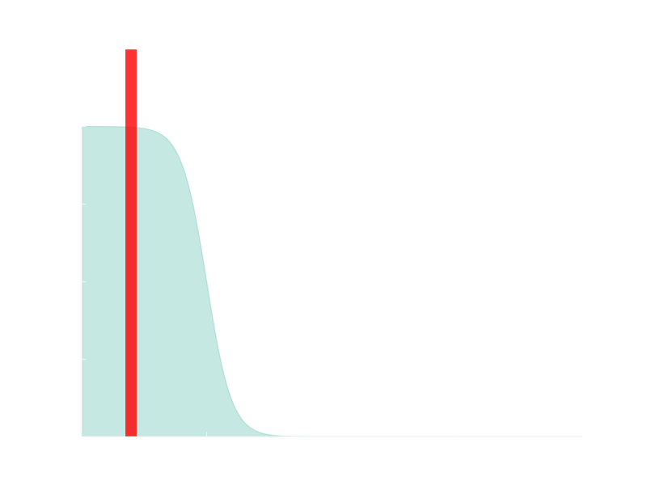
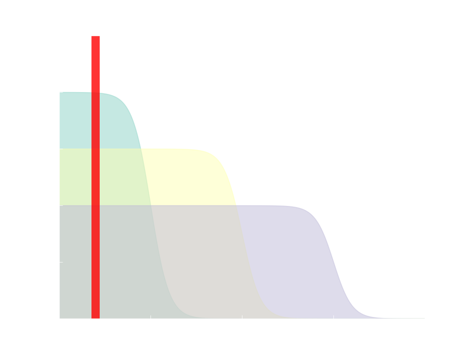
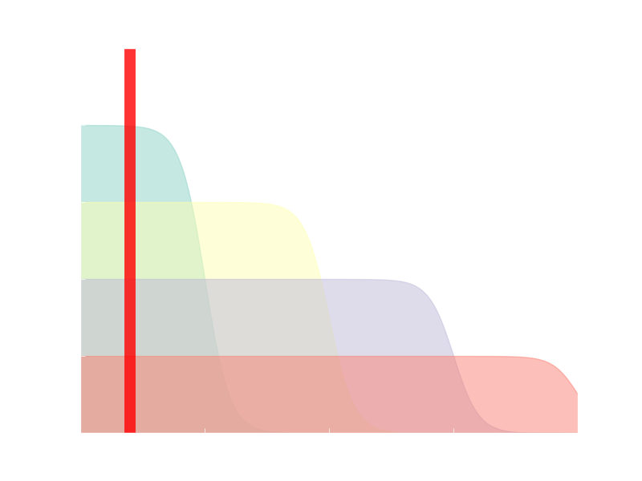
$ \dot{\Theta} = \frac{1}{\tau} \frac{\color{blue}(\lambda_3-\lambda_1)}{(C-A) } \sin(2 {\theta})$
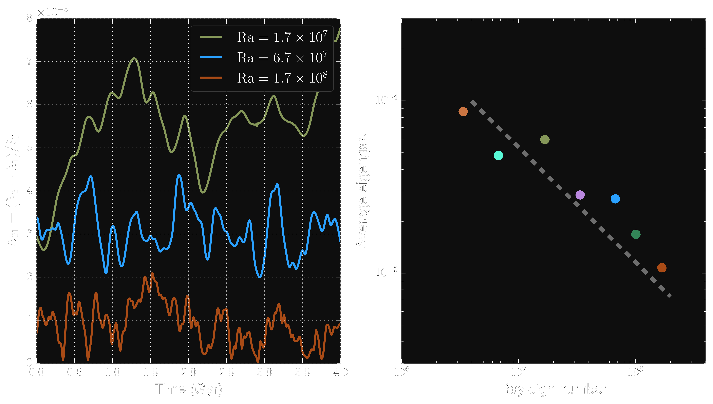
$ \dot{\Theta} = \frac{1}{\tau} \frac{(\lambda_3-\lambda_1)}{(C-A) } \sin(2 {\color{purple} \theta})$
$\sin(2\theta) \le \frac{2 \delta}{\vert \lambda_2-\lambda_1 \vert}$
Davis and Kahan (1970)
$ \dot{\Theta} = \frac{1}{\tau} \frac{(\lambda_3-\lambda_1)}{(C-A) } \sin(2 {\color{purple} \theta})$
Generation of large misfit angles
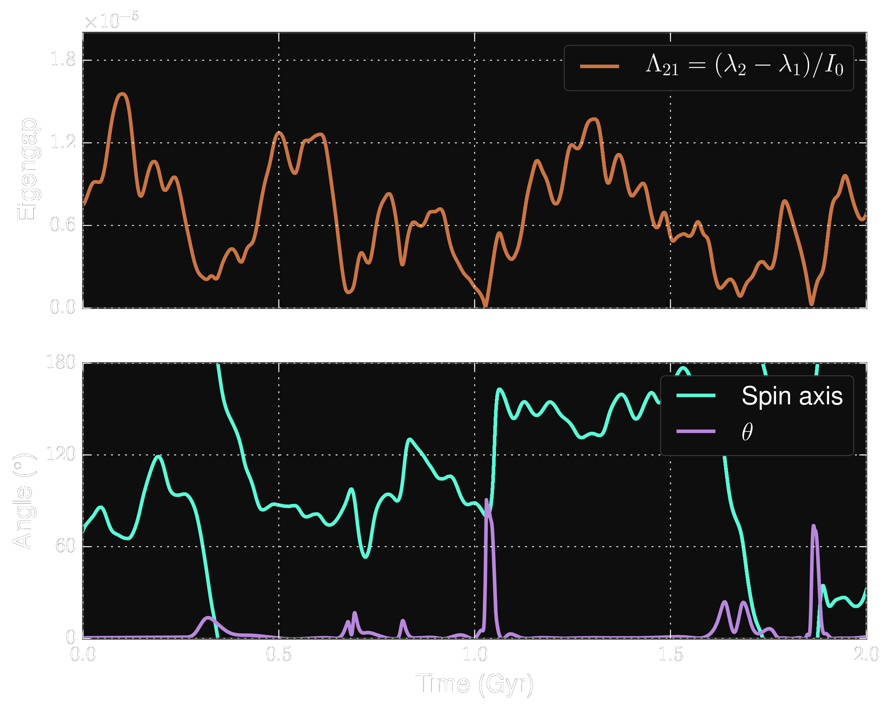
Putting it all together
\begin{equation} \begin{aligned}
\dot{\Theta} &= \underbrace{\frac{1}{{\color{red}\tau}}}_{\frac{R^2}{\kappa}\frac{\Gamma}{\mathrm{Ra}}}
\underbrace{\overbrace{\frac{\color{blue}(\lambda_3-\lambda_1)}{\color{yellow}(C-A) }}^{ \frac{\Gamma I_0}{\mathrm{Ra}} }}_{m I_0}
\sin(2 {\color{purple}\theta}) \\
\end{aligned}\end{equation}
Putting it all together
$\dot{\Theta} \sim \frac{\kappa}{R^2} \frac{1}{m} \sin( 2 {\color{purple}\theta}) $
Putting it all together
At higher Rayleigh number the driving force for TPW goes down.
However, the response timescale also goes down by about the same amount.
Furthermore, incidents of large mismatch angle $\theta$ become much more likely at higher Rayleigh number
Implications for Earth history?
Thanks for listening
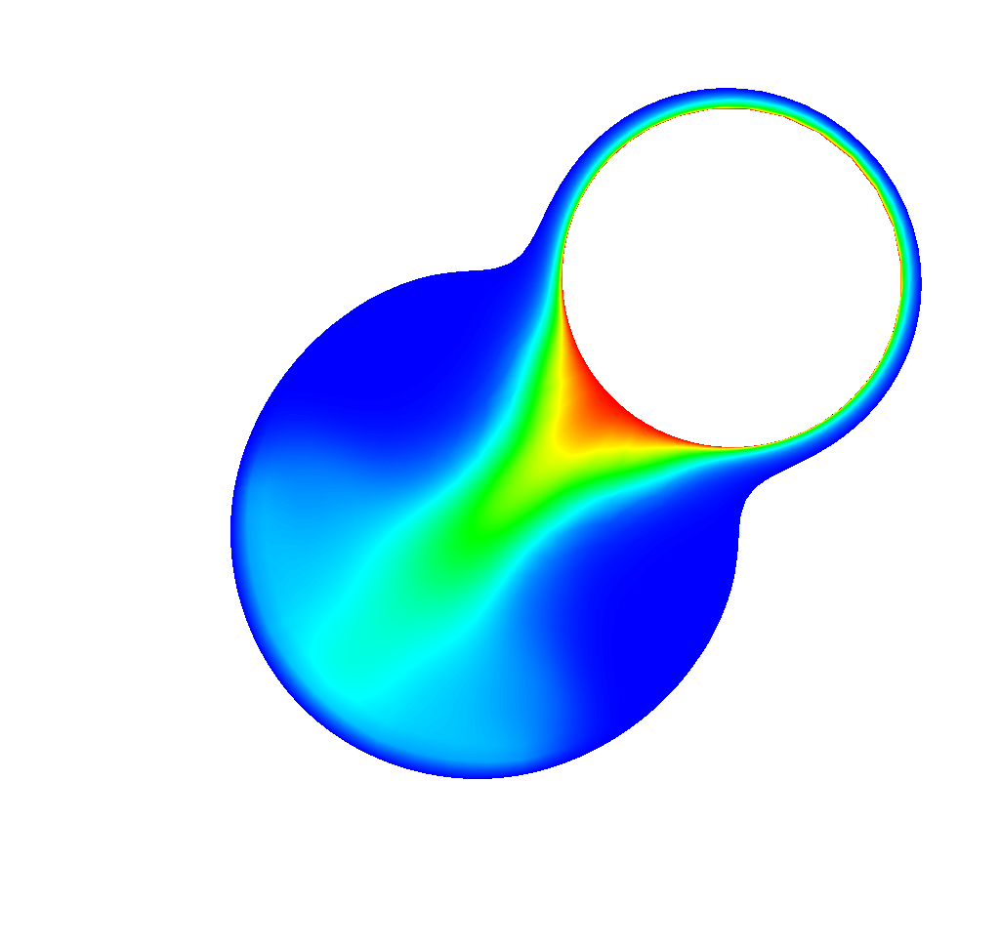